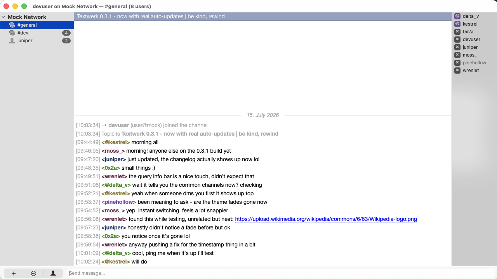
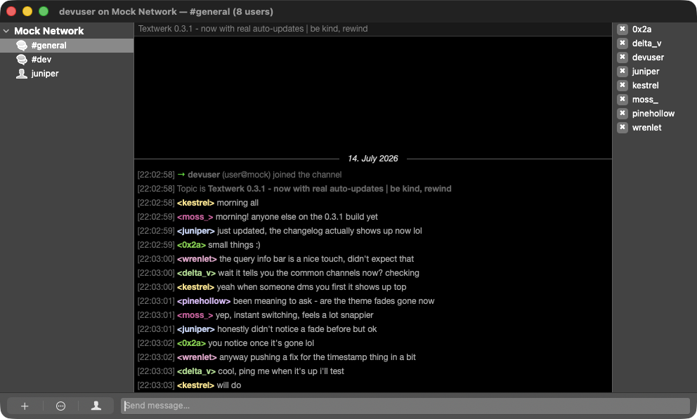
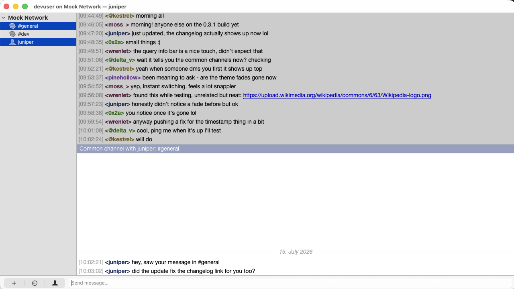
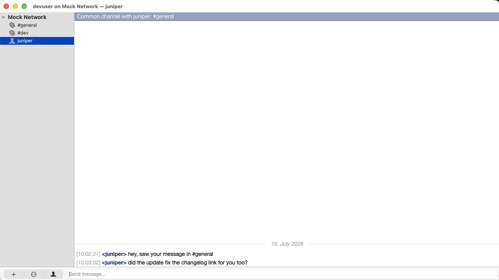

Old-school IRC.
Brand-new Mac.
Textwerk is a friendly fork of Textual, the chat app you already know, dusted off and rebuilt to feel right at home on today's Mac.
Free and open source · macOS 26 or later

Everything you need.
None of the junk.
All the power Textual was famous for, wrapped in an interface you can run start to finish from the keyboard.
Modern IRC, done right
Speaks fluent IRCv3, connects over native IPv6, and signs in with SASL. Modern servers, zero fuss.
Client certificate auth
Log in with a client TLS certificate, safely tucked away in the modern macOS Keychain.
Light & dark, natively
A crisp interface with matching light and dark looks that follow whatever your Mac is wearing.
Inline media
Pictures, video, YouTube, and more pop open right where the conversation is happening.
Make it yours
Theme it with plain web standards and write addons in Swift, Objective-C, Python, AppleScript, you name it.
Spoken messages
Let your Mac read the room out loud with built-in text-to-speech, now on AVSpeechSynthesizer.
Bouncer-friendly
Plays nicely with ZNC, plus SOCKS4, SOCKS5, and HTTP proxies, with or without TLS.
Fast by keyboard
Fuzzy channel search, smart auto-complete, and shortcuts for just about everything keep your hands home.
Filters & ignore rules
Mute the noise with rule-based ignores, filter incoming messages, and tune your highlights just so.
Looks great after dark, too.
A crisp interface with matching light and dark looks that follow whatever your Mac is wearing.



We gave Textual a new lease on life.
The original Textual has retired and gone quiet. So we picked up the torch, pointed it straight at macOS 26, fixed the things that broke, and swept out the cobwebs.
- Fixed for macOS 26
- Squashed the crashes and blank channel views, including that nasty connection crash from NWError.wifiAware.
- Rebuilt networking
- Swapped the ancient OELReachability for Apple's own NWPathMonitor from Network.framework.
- Reliable script startup
- Core JavaScript now loads through WKUserScript instead of document.write, so it starts up the same every time.
- Modernized text-to-speech
- Moved off the retired NSSpeechSynthesizer and onto today's AVSpeechSynthesizer.
- Dead code, gone
- Tossed out the license manager, the old OTR/Blowfish encryption, and the legacy WK1 WebView.
- Tidier Help menu
- Cleared out the FAQ, privacy, license, support, and search entries that didn't apply anymore.
- No submodules
- Ditched every git submodule, so cloning and building is one clean step.
Get Textwerk
Grab a build, drop it in Applications, and you're chatting in about a minute.
1 Download a release
Grab the latest .zip from Releases and unzip Textwerk.app into your Applications folder.
2 Open it the first time
Builds are unsigned, so macOS gets nervous on the first launch. Just right-click the app and pick Open, or clear the quarantine flag from Terminal:
xattr -d com.apple.quarantine /Applications/Textwerk.app3 Coming from Textual?
Textwerk spots your old setup on first launch and offers to bring over your servers, channels, and preferences. App Store or standalone, either one works.
Rather build it yourself?
You'll need Xcode 16+ and any valid signing identity, set in Configurations/Build/Code Signing Identity.xcconfig.
git clone https://github.com/bashgeek/Textwerk.git
cd Textwerk
./build.sh